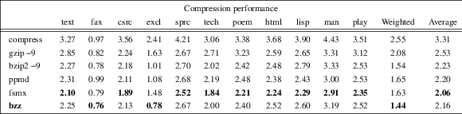

bzz − DjVu general purpose compression utility.
bzz −e[blocksize] inputfile outputfile
bzz −d inputfile outputfile
The first form of the command line (option −e) compresses the data from file inputfile and writes the compressed data into outputfile. The second form of the command line (option −d) decompressed file inputfile and writes the output to outputfile.
|
−d |
Decoding mode. |
−e[blocksize]
Encoding mode. The optional argument blocksize specifies the size of the input file blocks processed by the Burrows-Wheeler transform expressed in kilobytes. The default block sizes is 2048 KB. The maximal block size is 4096 KB. Specifying a larger block size usually produces higher compression ratios and increases the memory requirements of both the encoder and decoder. It is useless to specify a block size that is larger than the input file.
The Burrows-Wheeler transform is performed using a combination of the Karp-Miller-Rosenberg and the Bentley-Sedgewick algorithms. This is comparable to (Sadakane, DCC 98) with a slightly more flexible ranking scheme. Symbols are then ordered according to a running estimate of their occurrence frequencies. The symbol ranks are then coded using a simple fixed tree and the ZP binary adaptive coder (Bottou, DCC 98).
The Burrows-Wheeler transform is also used in the well known compressor bzip2. The originality of bzz is the use of the ZP adaptive coder. The adaptation noise can cost up to 5 percent in file size, but this penalty is usually offset by the benefits of adaptation.
The following table shows comparative results (in bits per character) on the Canterbury Corpus ( http://corpus.canterbury.ac.nz ). The very good bzz performance on the spreadsheet file excl puts the weighted average ahead of much more sophisticated compressors such as fsmx.

Note that DjVu contributors have several entries in this table. Program compress was written some time ago by Joe Orost. Program ppmd is an improvement of the PPM-C method invented by Paul Howard.
Program bzz was written by Léon Bottou <leonb@users.sourceforge.net> and was then improved by Andrei Erofeev <andrew_erofeev@yahoo.com>, Bill Riemers <docbill@sourceforge.net> and many others.
djvu(1), compress(1), gzip(1), bzip2(1)